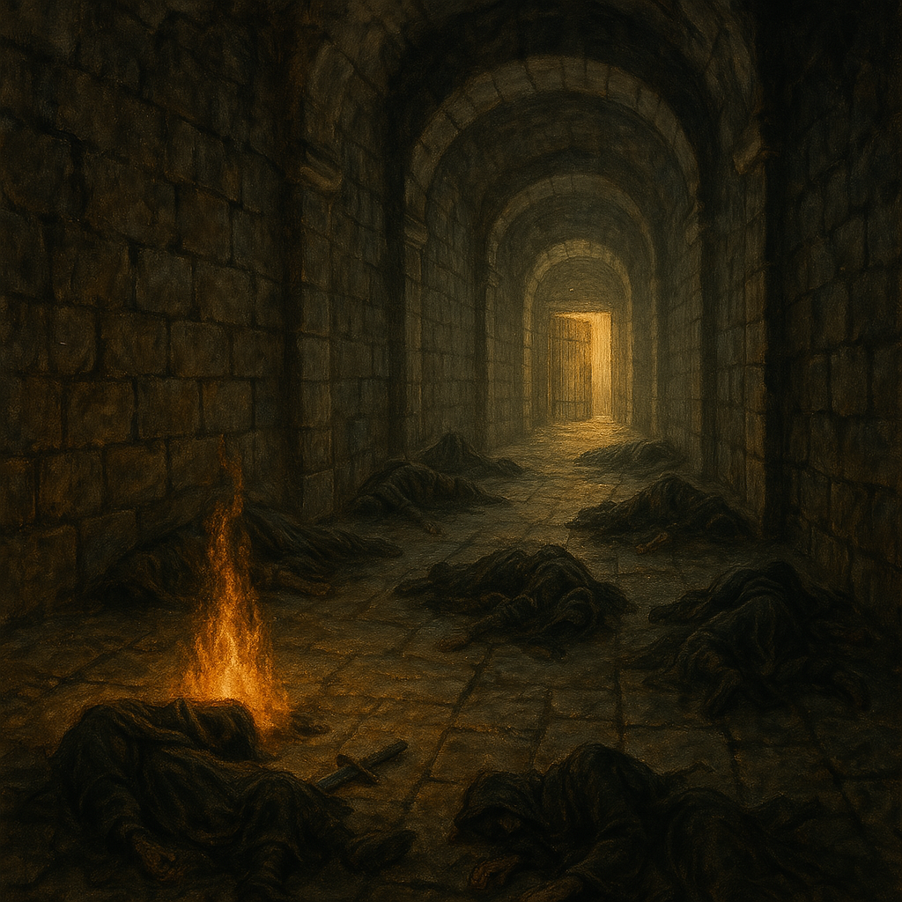

Chapter 3: The Spirit of Lorin
Beneath the Temple


Beneath the Temple
15048日期未知
換班時，烏柯準備要休息，而薩梅爾因為他的渣男行徑，決定好好教訓他一番，便刻意用走音的魯特琴在他面前彈奏，搞得烏柯難以入睡。後來，家亨也利用休息的時間和薩梅爾學習了彈奏魯特琴的基礎。
眾人起床後，家亨和米多莉決定嘗試用魔法驅散米多莉體內的邪惡存在，也順利成功了。當他們試圖也對崔夏驅魔時卻不知道為什麼失敗了。
崔夏雖然傷心，但他為了鼓舞同樣失望的夥伴們，念了一首妖精家喻戶曉的妖精詩《洛林精神》，講述為了自由，為了自己所追求的價值去反抗、去爭取。除了龍恩外，所有人都感受到了這首詩象徵著與拉索斯對抗的意念，幾位冒險者甚至注意到了崔夏身上散發出了微弱的光暈。隨後，崔夏擁抱了米多莉，也激勵著夥伴們繼續向前冒險，並起身走入了下一個房間。
為了彰顯家亨除去米多莉體內邪惡的事蹟，米多莉懇求嗚兮噢尼在牆上刻了一個碑文，作為對家亨的感激與紀念。
打開了下一道門，前方是無止盡的長廊。冒險者們走了兩個多小時，突然聽見前方傳來一聲慘烈的叫聲，也發現遠端長廊的盡頭，似乎有個人形。冒險者們做好準備，向前衝去，而遠方的多個身影紛紛站起，一隻遊魂與他喚起的七隻幽靈和冒險者們正面交鋒。在這場戰役中，幾位冒險者陷入昏迷，幸好有被成功救起，最終也成功擊滅遊魂和幽靈。
倒臥在長廊盡頭的，是七具屍體，身著拉索斯教的長袍，且各自配戴一把刻有拉索斯經文的匕首，上面的血跡才剛剛乾涸。冒險者們放了把火，將屍體燒了，而嗚兮噢尼也在火堆中跳起了起火之舞，崔夏也在屍體旁閉上雙眼祈禱，並默默流下了淚水。
一切結束後，冒險者們推開了前方的木門，出現在他們眼前的，是一個城鎮的巷弄。眾人紛紛趕了出去，只有烏柯和崔夏還在地下城內。崔夏告訴烏柯自己不該繼續跟著台北市議員們，因為自己會拖累大家的。他誠實地告訴烏柯，拉索斯教承諾他如果完成任務，會將他的父母釋放，所以他才自願和拉索斯教要求執行任務，而且任務內容是要將台北市議員的團體分崩離析，甚至一一殺死。但是因為感受到了團隊中大家的善意，他努力想抵抗腦中拉索斯教的聲音。烏柯放在他身體內的石頭，則讓他每一次想要抵抗拉索斯時，頭部劇烈陣痛。
崔夏說完後便回頭走入地下城，烏柯則向崔夏發表了他的肺腑之言，甚至衝了過去抱著了淚流滿面的崔夏。最後，烏柯將崔夏公主抱起來，帶他離開了地下城。
地下城外，帕拉丁突然發現，這是他的家鄉寇林菲爾德，而嗚兮噢尼撿起了一張掉落地上的傳單，上面是冒險者們的肖像，寫著「沃瓦倫的惡魔」，而巷口外的幾位人民朝著他們指指點點。隨後，一位年長的女性偷偷摸摸地走入了巷內，帕拉丁也認出了他是自己導師弗列里爵士的夫人。弗列里爵士夫人悄悄地告訴冒險者們不要擔心，他會保護他們的。
15048 Date Unknown
After handing over the shift, Uko was about to rest. However, Samael wanted to give Uko a lesson due to his scumbag behaviors. He delierately played his lute out of tune to Uko, making him hard to sleep. After that, Jiaheng spent some resting time to learn basics on playing the lute from Samael.
When the party woke up, Jiaheng and Midori decided to try to dispel the evil beings from Midori with magic, and they succeeded. However, they failed when they try it on Trisha.
Although Trisha was sad, she wanted to inspire the other disappointed comapnions. She read a well-knowned Elvish poem, "the Spirit of Lorin". It was about freedom, about resisting a fighting for the value that one pursue. Other than Ron, everyone felt the idea of fighting against the Laxthos from this poem. Some adventurers even saw lights emitted from Trisha's body. After that, Trisha embraced Midori, inspiring the party to keep on adventuring, and walked into the next room.
To showcase the event of Jiaheng removing the evil presence from Midori's body, Midori asked Usioni to carve an inscription on the wall, to show gratitude towards Jiaheng and also as a memento.
Opening the next door, it was an endless hallway. The adventurers walked for more than two hours before hearing a horrific scream. They also found a humanoid at the end of the hallway. The adventurers got ready and dashed forward. Several bodies rose, a wraith and seven specters that it summoned attacked the party. In this battle, several adventurers went unconscious, but was brought back to life, and the party finally defeated the wraith and the specters.
Seven bodies were laid down at the end of the hallway, wearing Laxthosian robe. Each individual also had a dagger with Laxthosian on it. The blood on them just started to get dry. The adventurers put up a fire, burned the bodies. Usioni perform a dance of the flames in the fire, while Trisha shed tears, praying next to the bodies with her eyes shut.
After all that, the adventurers pushed open the wooden door. An alley in a town was right in front of them. The party ran out, leaving Uko and Trisha the only two in the dungeon. Trisha told Uko that she shouldn't follow the Taipei City Council any more, 'cause she'd be a burden to the party. She also told Uko honestly that the Laxthosians promised to release her parents if she completed the task. And that's why she volunteered for this mission, to break the Taipei City Council, or even kill them one by one if neccessary. But after feeling the kindness of the party, she tried against the Laxthosian voices in her head. The mysterious stone that Uko placed in her head made her head ache like hell everytime she tried to resist the Laxthosians.
Trisha turned back to the dungeon after her monologue. Uko expressed his heartfelt thoughts, running towards the crying Trisha. At last, Uko priness carried Trisha, taking her out of the dungeon.
Outside the dungeon, Paladin found the place to be Korringfield, the town that he grew up in. Usioni picked up a flyer on the ground, with the portraits of the adventurers on it, and "the Demons of Vowalon" on it. Several townfolks were pointing them at the alley entrance. After a while, an old lady sneaked in the alley. Paladin recognized her as the wife of his mentor, Syr Flaerry. Lady Flaerry told the adventurers not to be worried, that she would protect them.